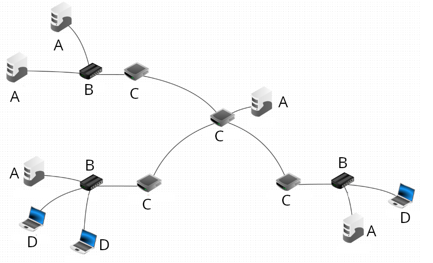

Exercices¶
Exercice de rappels¶
Exercice - Composants dans un réseau
Identifiez les différents composants du réseau suivant :

A = ..........
B = ..........
C = ..........
D = ..........
Exercices sur le protocole RIP¶
Pour les exercices 1 et 3 suivants, on utilisera la figure suivante :
Fiche d'exercices sur RIP
Voici une fiche d'exercices portant sur quelques rappels de première (trouver l'adresse d'un réseau à partir d'un masque, calculer le nombre d'adresses IP disponibles sur un réseau) et sur le protocole RIP.
- Fiche d'exercices - Fiche d'exercices au format PDF.
- Correction fiche d'exercices - Fiche d'exercices corrigée.
Exercice 1
On considère le réseau de la figure précédente.
Dans ce réseau, les nœuds A à F sont des routeurs dont on veut calculer les tables de routage. On suppose que l'on a exécuté le protocole RIP sur ce réseau.
Compléter la table suivante, qui indique pour chaque machine la portion de la table de routage pour la destination G.
Attention, ici, pour simplifier, on a pas indiqué les adresses des réseaux comme destinations (chose que l'on est censé faire normalement), mais les noms des routeurs qui sont directement reliés à ces réseaux.
Même chose pour les passerelles, on a indiqué les noms des routeurs plutôt que les adresses IP de leurs interfaces.
| machine | destination | passerelle | interface | distance |
|---|---|---|---|---|
| A | G | |||
| B | G | |||
| C | G | |||
| D | G | |||
| E | G | |||
| F | G | |||
| G | G |
Correction exercice 1
| machine | destination | passerelle | interface | distance |
|---|---|---|---|---|
| A | G | B | eth0 | 3 |
| B | G | F | eth0 | 2 |
| C | G | B | eth2 | 3 |
| D | G | E | eth1 | 3 |
| E | G | F | eth1 | 2 |
| F | G | G | eth1 | 1 |
| G | G | (non indiqué) | 0 |
Exercice 2
On considère le réseau de la figure précédente ainsi que le tableau trouvé en solution de l'exercice 2.
On suppose maintenant que le lien B-F tombe en panne.
- Quel est le vecteur de distance envoyé par B à ses voisins pour atteindre G, une fois qu'il détecte la panne (on suppose que les autres nœuds n'ont pas modifié leurs tables de routage) ?
- Pour chacun des événements suivants, dire lequel des quatre cas (évoqués dans le bloc "Principe du protocole RIP") du protocole RIP est appliqué. On supposera, pour simplifier, qu'aucun autre événement ne se produit entre-temps et qu'ils sont tous exécutés « en séquence ».
- Les routeurs A et C reçoivent de B le vecteur trouvé à la question 1.
- Le routeur C retransmet ce même vecteur à D.
- Le routeur D transmet le vecteur
(G,3)à C.
- Après le dernier cas ci-dessus, quel vecteur est transmis par C à A et B ?
Correction exercice 2
Ici encore, pour simplifier, on écrira les vecteurs de distances avec les noms des routeurs plutôt que les adresses IP des réseaux.
- B envoie le vecteur
(G, 16), indiquant ainsi que la route qu'il connaissait pour atteindre G est de taille « infinie ». -
- A et C reçoivent de B le vecteur
(G, 16).
Ils reçoivent donc une route plus longue pour G de la part de leur voisin censé transmettre les paquets vers G (B est la passerelle de A et C).
Nous sommes dans le cas 4. Les routeurs A et C mettent à jour leur route vers G, de manière à propager l'information de la panne (ils changent donc la distance en la remplaçant par 16). - C envoie le vecteur
(G, 16)à D.
D possède une déjà une route pour G passant par E de distance 3. Il ignore donc cette information car la nouvelle route a une plus grande distance. Il s'agit du cas 3. - C reçoit le vecteur
(G, 3)de D. Il possède actuellement dans sa table de routage un chemin vers G passant par B et de longueur 16 (suite au vecteur(G, 16)qu'il avait reçu de B). Il remplace donc son ancien chemin vers G : la passerelle devient D (c'est-à-dire le routeur qui lui a transmis l'information) et la distance devient 4 (on incrémente la distance reçue).
- A et C reçoivent de B le vecteur
- Le routeur C envoie
(G, 4)à A et B. Ces derniers mettent à jour leur table pour inscire la nouvelle information de routage : la route vers G passe maintenant par C et est de distance 5.
Exercices de conversion d'unités¶
Ecritures des unités utilisées
👉 L'unité utilisée pour le débit est le bit par seconde.
Vous rencontrerez trois écritures différentes qui signifient la même chose :
- b/s
- \(\text{b}.\text{s}^{-1}\)
- bps
QCM puissances - 1
\(10^0=\)
- [ ] 0
- [ ] 1
- [ ] 10
- [ ] Autre réponse

 A savoir : \(a^0=1\)
A savoir : \(a^0=1\)-
-
QCM puissances - 2
\(\dfrac{10^8}{10^6}=\)
- [ ] 2
- [ ] 100
- [ ] 0.01
- [ ] Autre réponse
-
- \(\dfrac{10^8}{10^6}=10^{8-6}=10^{2}=100\)
-
-
QCM puissances - 3
\(\dfrac{10^6}{10^8}=\)
- [ ] 2
- [ ] 100
- [ ] 0.01
- [ ] Autre réponse
-
- \(\dfrac{10^6}{10^8}=10^{6-8}=10^{-2}=\dfrac{1}{10^2}=\dfrac{1}{100}=0.01\)
-
QCM puissances - 4
\(\dfrac{10^8}{50 \times 10^6}=\)
- [ ] 2
- [ ] 0.2
- [ ] 20
- [ ] Autre réponse
- \(\dfrac{10^8}{50 \times 10^6}=\dfrac{10^2 \times 10^{6}}{50 \times 10^6}=\dfrac{100 \times 10^{6}}{50 \times 10^6}= 2\)
-
Unités
Donner en bps (\(\text{b.s}^{-1}\))
a) 2 kbps
b) 50 kbps
c) 3 Mbps
d) 50 Mbps
e) 100 Mbps
f) 1 Gbps
g) 10 Gbps
Solution
a) 2 kbps = \(2 \times 10^3\) bps = 2000 bps = 2000 b/s = 2000 \(\text{b.s}^{-1}\)
b) 50 kbps = \(50 \times 10^3\) bps = 50000 bps = \(5 \times 10^4\) bps = \(5 \times 10^4\) \(\text{b.s}^{-1}\)
c) 3 Mbps = \(3 \times 10^6\) bps = \(3 \times 10^6\) b/s = \(3 \times 10^6\) \(\text{b.s}^{-1}\)
d) 50 Mbps = \(50 \times 10^6\) bps = \(50 \times 10^6\) b/s = \(5 \times 10^7\) b/s = \(5 \times 10^7\) \(\text{b.s}^{-1}\)
e) 100 Mbps = \(100 \times 10^6\) bps = \(10^2 \times 10^6\) bps = \(10^8\) bps = \(10^8\) b/s = \(10^8\) \(\text{b.s}^{-1}\)
f) 1 Gbps = \(10^9\) bps = \(10^9\) b/s = \(10^9\) \(\text{b.s}^{-1}\)
g) 10 Gbps = \(10 \times 10^{9}\) bps = \(10^{10}\) b/s = \(10^{10}\) \(\text{b.s}^{-1}\)
Exercice 1
a) Calculer la métrique OSPF d'une liaison Fibre avec une valeur de référence de \(10^8\) bps
b) Même question avec une valeur de référence de \(10^{10}\) bps
Solution
a) \(\dfrac{10^8}{10^{10}}=10^{8-10}=10^{-2}=0.01\)
b) \(\dfrac{10^{10}}{10^{10}}=1\)
Exercice 2
a) Calculer la métrique OSPF d'une liaison FastEthernet avec une valeur de référence de \(10^8\) bps
b) Même question avec une valeur de référence de \(10^{10}\) bps
Solution
100 Mbps = \(100 \times 10^6=10^2 \times 10^6=10^8\) bps
a) \(\dfrac{10^8}{10^8}=10^{8-8}=10^0=1\)
b) \(\dfrac{10^{10}}{10^8}=10^{10-8}=10^{2}=100\)
Exercice 3
a) Calculer la métrique OSPF d'une liaison Ethernet (débit 10 Mbps) avec une valeur de référence de \(10^8\) bps
b) Même question avec une valeur de référence de \(10^{10}\) bps
Solution
10 Mbps = \(10 \times 10^6=10 \times 10^6=10^7\) bps
a) \(\dfrac{10^8}{10^7}=10^{8-7}=10^1=10\)
b) \(\dfrac{10^{10}}{10^7}=10^{10-7}=10^{3}=1000\)
Exercice 4
Que vaut la bande passante d'une liaison dont le coût OSPF est de 50 avec une valeur de référence de \(10^8\).
Solution
\(50 = \dfrac{10^8}{x} \Leftrightarrow 50x=10^8 \Leftrightarrow x= \dfrac{10^8}{50} = \dfrac{100 \times 10^6}{50} = 2 \times 10^6\)
La bande passante est de 2 Mbps
Exercices sur le protocole OSPF¶
Exercice 1
On considère les débits de quelques liaisons :
- Ethernet : \(10~Mbit/s\)
- Bluetooth : \(3~Mbit/s\)
- FastEthernet : \(100~Mbit/s\)
- Fibre : \(10~Gbit/s\)
Calculez le coût correspondant à chacun de ces débits.
Exercice 2 - Recherche de plus court chemin
Donner le plus court chemin pour aller de E à F dans le graphe ci-dessous :

Exercice 3
Le client 01 veut communiquer avec le serveur 02.

- Les liens en vert sont en FastEthernet (100 mbps)
- Les lien oranges en Ethernet (10 mbps)
- Les liens rouges sont en 1 mbps
- Faire un graphe de cette situation, avec les coûts sur les arêtes
- Donner le chemin le plus court avec le protocole OSPF entre 01 et 02. Quelle est la longueur de ce chemin ? Y'a-t-il plusieurs chemins équivalents ?
Exercice 4
On donne le réseau suivant (source : David Roche)

-
En vous basant sur le protocole OSPF (vous mettrez en dernière colonne "métrique", ce qui correspond au coût total pour arriver à destination), déterminez la table de routage du routeur A.
On donne les débits suivants :- liaison routeur A - routeur B : 1 Mbps
- liaison routeur A - routeur C : 10 Mbps
- liaison routeur C - routeur B : 10 Mbps
- liaisons dans le réseau 172.16.0.0/16 : 1 Mbps
- liaisons dans le réseau 172.18.0.0/16 : 1 Mbps
- liaisons dans le réseau 172.17.0.0/16 : 1 Mbps
-
Quels sont les chemins qui seraient empruntés par un paquet pour aller du switch R1 au switch R2 et du switch R1 au switch R3 ?
Autres exercices¶
Exercice 1
On considère le réseau suivant :
Pour chacun des liens du réseau, proposer une technologie réseau faisant que, pour les nœuds A,B et C, la route pour atteindre G soit différente selon que l'on utilise OSPF ou RIP.
Exercice 2
On considère un réseau ayant les propriétés suivantes :
- la distance entre deux nœuds est toujours inférieure à 15 ;
- pour chaque paire de nœuds
(A, B), il n'existe pas plusieurs chemins de même taille entre A et B.
On considère ce réseau comme une unique zone backbone OSPF.
Donner une condition suffisante pour qu'OSPF et RIP calculent les même routes.
Exercice 3
Si l'on essaie d'exécuter plusieurs fois de suite la commande traceroute - I <url d'un site>, obtiendra t-on toujours le même résultat ? (Vous pouvez faire des tests sur les sites de votre choix.)
Justifier.
Sujets de bac¶
Voici quelques sujets de bac pour vous entraîner :